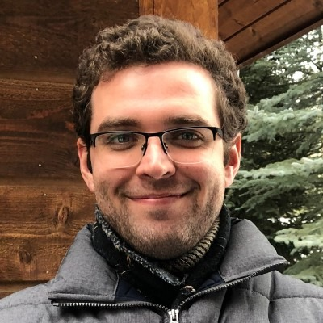

Invited speaker
Eli Cole
Senior Research Scientist and Team Lead · GenBio AI
Talk title forthcoming
Abstract
Abstract forthcoming.
Biography
Eli Cole is a computer scientist whose primary interests are machine learning and computer vision, with an emphasis on building machine learning systems that enable scientific discovery. He is currently a Senior Research Scientist and Team Lead at GenBio AI, where he works on large multimodal AI models for biology, particularly at the cell and tissue level.
Previously, Eli was a Research Scientist at Altos Labs in Peter Kharchenko’s group, where he worked closely with experimental scientists to develop machine learning systems for discovering biologically significant cell and tissue states from data such as scRNA-seq, spatial transcriptomics, histology, IF, and IHC. He earned his Ph.D. at Caltech under Pietro Perona, focusing on computer vision, self-supervision, and spatial representation learning, and spent part of his Ph.D. working with Serge Belongie at Google Research. He also completed internships at Microsoft Research and the U.S. Air Force Research Laboratory. He received his B.S.E. from Duke University with a double major in electrical engineering and mathematics.